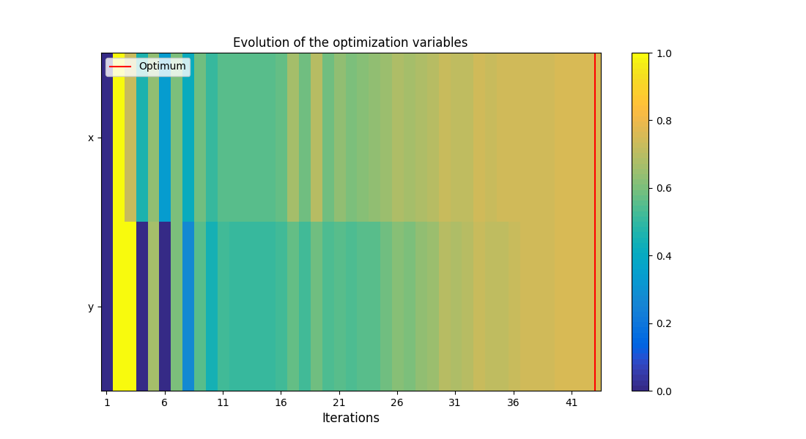
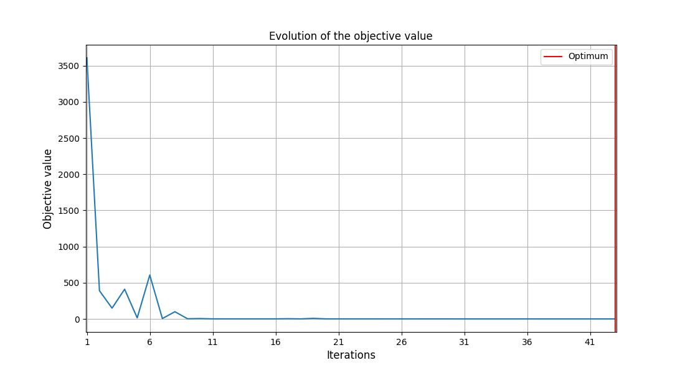

Note
Click here to download the full example code
The Rosenbrock mono-disciplinary problem¶
In this example, we consider the Rosenbrock mono-disciplinary optimization problem
where \(U\sim\mathcal{N}(0,0.0025)\) is a Gaussian variable and \(\mathbb{E}\) is the expectation operator.
In the following, we will call \(f\) the function computing \((U-x)^2+100(y-x^2)^2\) given \(x\), \(y\) and \(U\).
from __future__ import annotations
from gemseo.algos.design_space import DesignSpace
from gemseo.algos.parameter_space import ParameterSpace
from gemseo.disciplines.analytic import AnalyticDiscipline
from gemseo_umdo.formulations.sampling_settings import Sampling_Settings
from gemseo_umdo.scenarios.umdo_scenario import UMDOScenario
Firstly, we define the discipline implementing the Rosenbrock function \(f\):
discipline = AnalyticDiscipline({"z": "(u-x)**2+100*(y-x**2)**2"}, name="f")
where \(x,y\) belongs to the interval \([-2,2]\):
design_space = DesignSpace()
design_space.add_variable("x", lower_bound=-2, upper_bound=2.0, value=-2.0)
design_space.add_variable("y", lower_bound=-2, upper_bound=2.0, value=-2.0)
and \(U\) is a Gaussian variable with unit mean and standard deviation equal to 0.05:
uncertain_space = ParameterSpace()
uncertain_space.add_random_variable("u", "OTNormalDistribution", mu=1.0, sigma=0.05)
Then, we define a UMDOScenario to minimize the statistic \(\mathbb{E}[(U-x)^2+100(y-x^2)^2]\) estimated using a first-order Taylor polynomial of \(f\) at \(\mathbb{E}[U]=0.2\) at each iteration of the optimization loop:
scenario = UMDOScenario(
[discipline],
"z",
design_space,
uncertain_space,
"Mean",
formulation_name="DisciplinaryOpt",
statistic_estimation_settings=Sampling_Settings(n_samples=30),
)
Out:
/builds/gemseo/dev/gemseo-umdo/src/gemseo_umdo/formulations/base_sampling_settings.py:63: PydanticDeprecatedSince211: Accessing the 'model_fields' attribute on the instance is deprecated. Instead, you should access this attribute from the model class. Deprecated in Pydantic V2.11 to be removed in V3.0.
if "seed" in doe_algo_settings.model_fields and doe_algo_settings.seed is None:
/builds/gemseo/dev/gemseo-umdo/src/gemseo_umdo/scenarios/base_u_scenario.py:148: PydanticDeprecatedSince20: The `copy` method is deprecated; use `model_copy` instead. See the docstring of `BaseModel.copy` for details about how to handle `include` and `exclude`. Deprecated in Pydantic V2.0 to be removed in V3.0. See Pydantic V2 Migration Guide at https://errors.pydantic.dev/2.11/migration/
formulation_settings_model_copy = formulation_settings_model.copy()
/builds/gemseo/dev/gemseo-umdo/src/gemseo_umdo/formulations/sampling.py:150: PydanticDeprecatedSince211: Accessing the 'model_fields' attribute on the instance is deprecated. Instead, you should access this attribute from the model class. Deprecated in Pydantic V2.11 to be removed in V3.0.
if "n_samples" in doe_algo_settings.model_fields:
We execute this scenario using the gradient-based optimizer SLSQP:
scenario.execute(algo_name="NLOPT_SLSQP", max_iter=100)
and plot the optimization history:
scenario.post_process(post_name="OptHistoryView", save=False, show=True)
-

Out:
<gemseo.post.opt_history_view.OptHistoryView object at 0x792c68619dc0>
Lastly, we can compare the numerical solution of this Rosenbrock problem under uncertainty
(scenario.optimization_result.x_opt, scenario.optimization_result.f_opt)
Out:
(array([1.00075707, 1.0015147 ]), np.float64(0.002386012054550266))
to the solution of the Rosenbrock problem without uncertainty, namely \((x^*,f^*)=([1, 1], 0)\).
Total running time of the script: ( 0 minutes 1.093 seconds)
Download Python source code: plot_s_rosenbrock.py